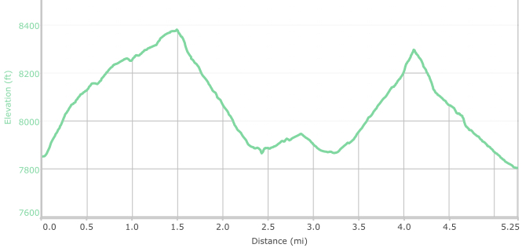

Hike New Mexico
w/ Tom & Ken
Chamisa Trail
| Difficulty | Round-trip | Type | Elev. Chg. | Exposure | Wow Factor | Facilities | Seasons | Photos | By Car |
|---|---|---|---|---|---|---|---|---|---|
| Medium | 5.3 miles | Loop | 1000 ft | Fairly shady | Forest & views | None | All |
 |
 |



- Jan 4, 2016: Ready for a snowy hike
- Mar 20, 2016: Which way to go?
- Jan 8, 2016: Same place, different time!
- Mar 27, 2016: Jack takes the lead on Chamisa
- Jul 23, 2015: Bill explores the beautiful valley
- May 20, 2016: Summer's return path
- Jan 8, 2016: Heading back on a snowy day
- https://www.flickr.com/photos/139088815@N08/27295030694/in/photostream/
- https://www.flickr.com/photos/139088815@N08/27295044574/in/photostream/
- https://www.flickr.com/photos/139088815@N08/27872535606/in/photostream/
- https://www.flickr.com/photos/139088815@N08/27806040252/in/photostream/
- https://www.flickr.com/photos/139088815@N08/27872545616/in/photostream/
- https://www.flickr.com/photos/139088815@N08/27806051982/in/photostream/
- https://www.flickr.com/photos/139088815@N08/27806067682/in/photostream/
The Chamisa Trail can be a great hike - any time of year! It is not far up Hyde Park Road from Santa Fe, so it is accessible, and provides some good exercise, as the climb up is somewhat steep. At the high point, one can return via the alternate route, or continue back down the hill towards Tesuque Creek. In the summer, the trail along Tesuque Creek (the Winsor Trail) can be followed up or down river from the meadow junction with Chamisa. The meadow and creek there are quite picturesque.